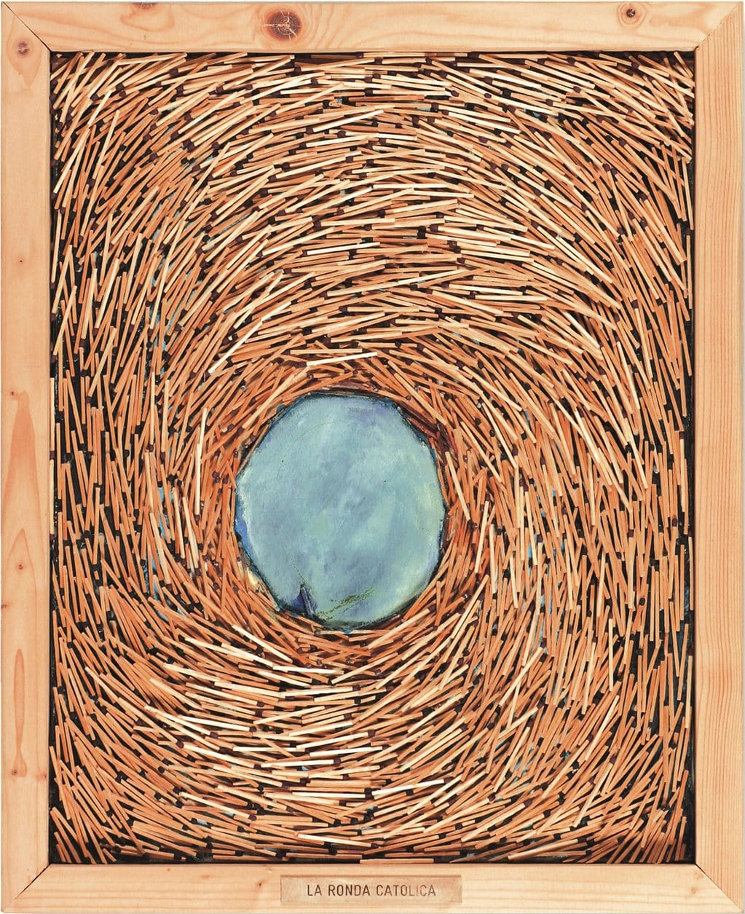
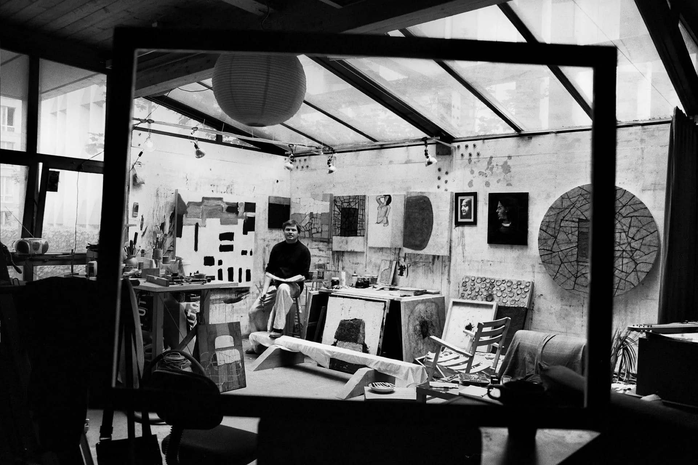

Luis Andrés Gleixner — Artiste Peintre
Une peinture qui fait de la surfaceun paysage.
Textures, sillons et matière, quatre décennies de peinture qui transforment la surface en paysage.
Voir les collections→
La Ronda Católica — Allumettes et acrylique sur toile, 2002
Expositions & collections
Quatre décennies d'atelier · plus de 100 œuvres · Collections privées à Paris, Santiago, Dubaï & Pékin.
L'œuvre
Les collections.
Six ensembles d'œuvres entre capture, matière et mouvement, chacun un vocabulaire distinct, construit au fil des années à l'atelier.

L'Artiste
À l'atelier
Grand, robuste, Luis Andrés Gleixner s'est approché avec un sourire aux lèvres, un sourire mi-amusé, mi-inquiet, qui semblait dire : « Qu'allez-vous faire de moi ? »
Il s'est assis avec assurance, ponctuant son geste d'une maladresse presque enfantine. Puis il a souri comme si tout était normal, et semblait prêt à répondre à mes questions.
Restez proche de l'atelier
Nouvelles œuvres & expositions
Soyez informé en avant-première des nouvelles peintures, événements et expositions. Votre e-mail n'est jamais transmis à des tiers.
@andres.gleixner.art
L'atelier, en direct.
Travaux en cours, nouvelles pièces et détails d'atelier — à suivre au jour le jour sur Instagram.